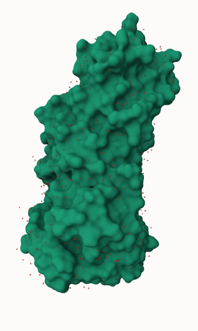
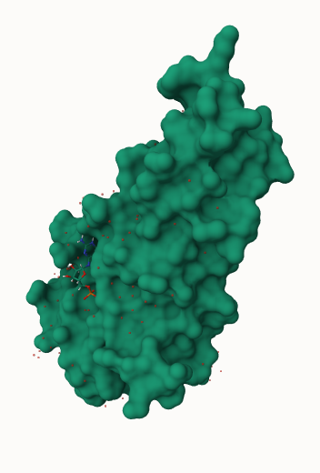
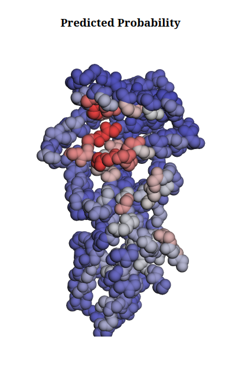
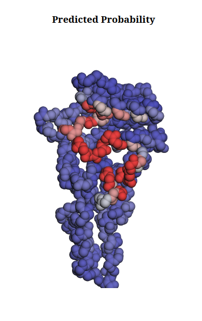
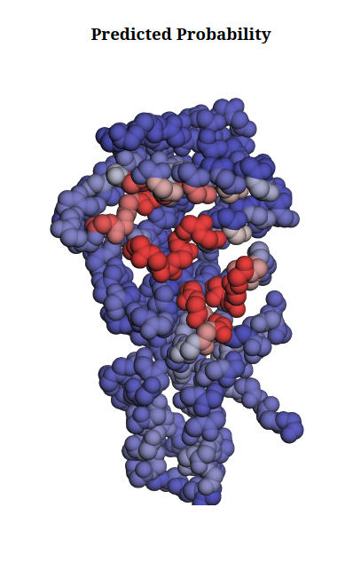
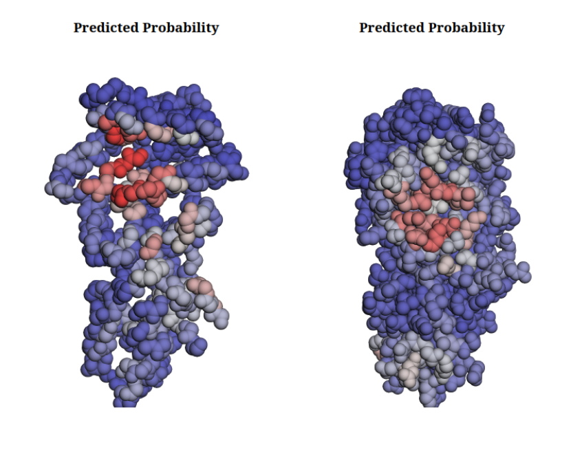
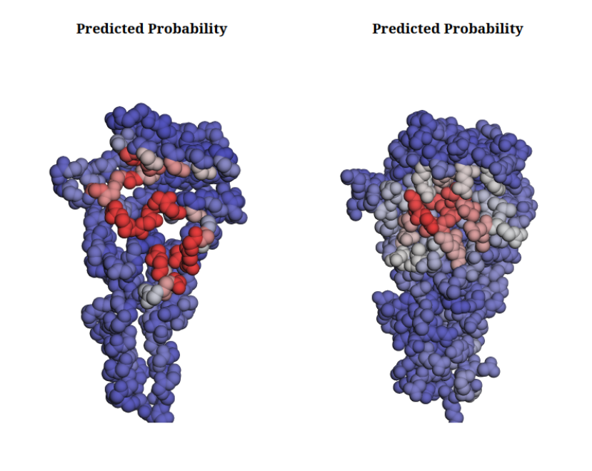
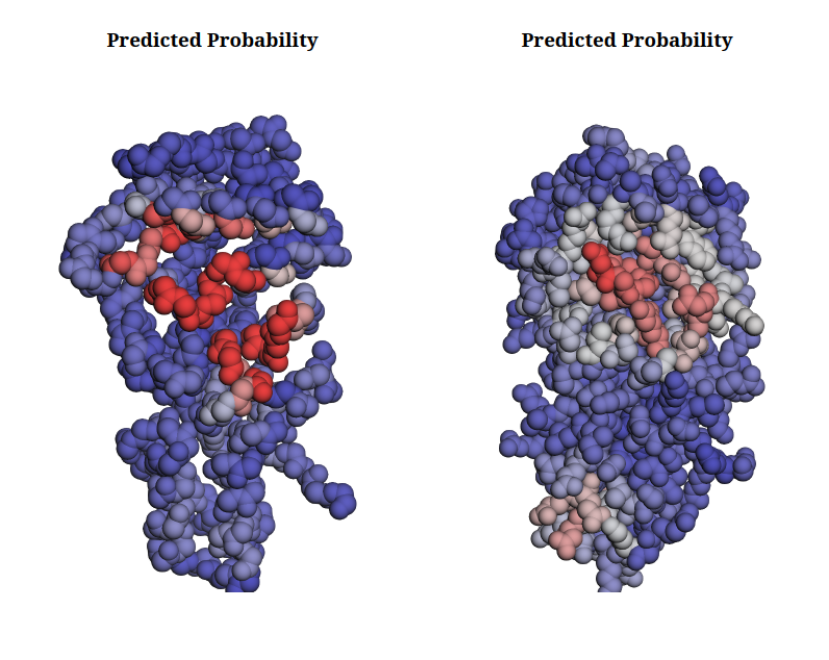

Comparing ligand-binding site predictions across different protein structure modalities using SIMORGH
OverviewQuestions:
Objectives:
How does the structural modality (Apo, Holo, or Predicted) affect ligand-binding site prediction?
Can integrating protein dynamics improve binding site predictions across different modalities?
Prepare and preprocess experimental and predicted protein structures for binding site prediction.
Run SIMORGH to predict ligand-binding sites.
Compare predictions using static structures versus dynamic structural ensembles.
Time estimation: 1 hourSupporting Materials:Published: Sep 24, 2026Last modification: Sep 24, 2026License: Tutorial Content is licensed under Creative Commons Attribution 4.0 International License. The GTN Framework is licensed under MITpurl PURL: https://gxy.io/GTN:T00594version Revision: 1
Proteins are not static objects. They constantly move and change shape, and these conformational changes can be especially important when a ligand binds. A protein structure captured before ligand binding is called the apo form, while a structure captured with a ligand bound is called the holo form (for more information about apo and holo state, please take a look at How different are structurally flexible and rigid binding sites?).
Why does this matter?
In the holo structure, the protein has already adopted a conformation compatible with the ligand. As a result, the binding pocket is often easier to identify: the pocket is already pre-organized around the ligand.
But what happens when the ligand is not there? And what if the structure we use is not an experimentally determined structure at all, but a Colabfold prediction?
This tutorial explores exactly that question. We will use SIMORGH (Omid Mokhtari 2026) to address this challenge.
Simorgh is a deep learning framework built on SE(3)-equivariant neural networks for ligand-binding site prediction. It combines local geometric reasoning with information from diverse protein states. A message-passing module first encodes the spatial context of individual residues within each structure, followed by an aggregation module that integrates these residue-level representations across the ensemble. By explicitly modeling structural variability, Simorgh identifies binding sites that are meaningful across multiple protein states, rather than being biased toward a single structure.
Warning: LICENSESIMORGH is only available for NON-COMMERCIAL use. Permission is only granted for academic, research, and educational purposes. Before using, be sure to review, agree, and comply with the license. For commercial use, please review the SIMORGH license on GitHub and contact the copyright holders
We will use the Escherichia coli Signal Recognition Particle Receptor FtsY as our example. FtsY binds Guanosine-5’-diphosphate (GDP), and experimentally determined structures are available in either apo or holo conformations.
We will work with two experimental structures; 6N5J represents the apo state (Ataide and Faoro 2019), and 6FQD represents the Holo state (Mrusek 2018).
The interesting question is:
If we predict the ligand-binding site from different structural representations of the same protein, how much does the prediction change?
To answer this, we will compare three structural modalities:
- Native apo structure — experimentally determined
- Native holo structure — experimentally determined
- Colabfold structure — computationally predicted from sequence
AgendaIn this tutorial, we will cover:
Get the structures
Experimental structures
Hands On: Get PDB file
- Get PDB file ( Galaxy version 0.1.1) with the following parameters:
- “PDB accession code”:
6N5J- In “Additional options”:
- “Output Tags”:
#apoRename the data
6N5J PDB- Get PDB file ( Galaxy version 0.1.1) with the following parameters:
- “PDB accession code”:
6FQD- In “Additional options”:
- “Output Tags”:
#holo- Rename the data
6FQD PDB
QuestionView the PDB files by clicking on the eye icon galaxy-eye. It will visualize the PDB with the
Molstar Viewer. In the Components section, click on the three dots right side of the Polymer. Then Add Representation and then select Molecular Surface
- Compare the apo and holo structures, focusing on their cavities. Which structure has a deeper and more clearly defined pocket? What might this difference suggest about the effect of ligand binding on the protein structure?
- The holo structure has a deeper and better-defined pocket, with a shape that is more complementary to the ligand. The apo structure generally has a shallower or less well-defined cavity. This illustrates how ligand binding can reshape or stabilize a binding pocket to accommodate the ligand.

6N5J PDB

6FQD PDB
Predicted structures
We will use Colabfold (Mirdita et al. 2022) to predict the 3D structure of our protein.
Please note that since the training data consist of BBFlow conformations, applying relaxation during inference introduces a distribution shift that may alter the structural features learned by the model. Therefore, it is preferable to avoid unnecessary relaxation during inference. To do that we will exclude AMBER relaxation.
Hands On: Colabfold prediction
Create a new fasta dataset (
FtsY.fasta) from the following:>6N5J_1|Chains A, B|Signal recognition particle receptor FtsY|Escherichia coli (strain K12) (83333) GFARLKRSLLKTKENLGSGFISLFRGKKIDDDLFEELEEQLLIADVGVETTRKIITNLTEGASRKQLRDAEALYGLLKEE MGEILAKVDEPLNVEGKAPFVILMVGVNGVGKTTTIGKLARQFEQQGKSVMLAAGDTFRAAAVEQLQVWGQRNNIPVIAQ HTGADSASVIFDAIQAAKARNIDVLIADTAGRLQNKSHLMEELKKIVRVMKKLDVEAPHEVMLTIDASTGQNAVSQAKLF HEAVGLTGITLTKLDGTAKGGVIFSVADQFGIPIRYIGVGERIEDLRPFKADDFIEALFARED
- Click galaxy-upload Upload Data at the top of the tool panel
- Select galaxy-wf-edit Paste/Fetch Data at the bottom
Paste the file contents into the text field
- Change the dataset name from “New File” to
FtsY.fasta- Change Type from “Auto-detect” to
fasta* Press Start and Close the window- Colabfold MSA ( Galaxy version 1.5.5+galaxy1) with the following parameters:
- “Data input method”:
FASTA file- “Query sequence fasta”:
FtsY.fasta- Colabfold Alphafold ( Galaxy version 1.5.5+galaxy1) with the following parameters:
- “Tar file output from colabfold MSA tool”:
Output of Colabfold MSA- In “Advanced options”:
- “How many recycles to run?”:
5- “Number of ensembles”:
1- “Set seed”:
42- “Number of models to use for structure prediction”:
1- “Use AMBER”:
Don't use AMBER- Extract dataset with the following parameters:
- “Input List”:
PDB predictionsoutput of Colabfold Alphafold- “How should a dataset be selected?”:
The first datasetRename the data
FtsY Colabfold predicted- Add the tag:
#colabfold
Question
- Why might a Colabfold predicted structure differ from the experimental apo or holo structures?
- Colabfold predicts the structure based on sequence and evolutionary information. It typically predicts an averaged or lowest-energy state (often apo-like), but it does not know about specific ligands present in the experimental holo environment.
Structure preprocessing
PDB cleanup
Next we should preprocess the raw experimental PDB structures to fix structural anomalies. We will use pdbfixer (Peter Eastman et al. 2026) to identify and model missing heavy atoms, insert missing flexible loops or internal side chains based on the sequence, remove crystallographic water molecules or unwanted ligand, replace non-standard residue entries with standard amino acids, and add explicit hydrogen atoms at specified pH levels to ensure physical completeness for downstream modeling.
Hands On: PDBFixer
- PDBFixer ( Galaxy version 1.8.1+galaxy0) with the following parameters:
- “PDB input file”:
6N5J PDB- “Missing atoms to be added”:
Heavy atoms only- “Which heterogens to keep”:
None- “Replace nonstandard residues with standard equivalents?”:
YesRename the data
6N5J PDB fixed- PDBFixer ( Galaxy version 1.8.1+galaxy0) with the following parameters:
- “PDB input file”:
6FQD PDB- “Missing atoms to be added”:
Heavy atoms only- “Which heterogens to keep”:
None- “Replace nonstandard residues with standard equivalents?”:
Yes- Rename the data
6FQD PDB fixed
Question
- Why is it important to replace non-standard residues with standard equivalents?
- Downstream tools like SIMORGH or BBFlow are often trained on standard amino acids. Non-standard residues can cause errors or be ignored during the prediction process if they are not explicitly handled by the models.
Retrieve chain B
Since FtsY is a homodimer, we will use a single chain B for simplicity. For this task, we will use “Text reformating with awk” tool (Grüning et al. 2018) to reformat our PDB files.
The command rectype = substr($0,1,6), gets the characters 1-6 of the current line (such as ATOM, HETATM, or TER).
Then the command chain = substr($0,22,1) gets the character 22 of the line which corresponds to either A or B (the chain identifiers).
Then, if ((rectype ~ /^ATOM/ || rectype ~ /^HETATM/ || rectype ~ /^TER/) && chain == "A") next skips any line that is ATOM, HETATM, or TER and it is chain A.
Finally, print outputs any line that is not skipped.
In summary, “Keep everything except ATOM/HETATM/TER records from chain A.”
Copy the following script in the “AWK Program” of the following tool:
{
rectype = substr($0,1,6)
chain = substr($0,22,1)
if ((rectype ~ /^ATOM/ || rectype ~ /^HETATM/ || rectype ~ /^TER/) && chain == "A") next
print
}
Hands On: Text reformatting with awk
- Text reformatting with awk ( Galaxy version 9.11+galaxy0) with the following parameters:
- “File to process”:
6N5J PDB fixed- “AWK Program”:
copy the text from aboveRename the data
6N5J PDB fixed chainB- Text reformatting with awk ( Galaxy version 9.11+galaxy0) with the following parameters:
- “File to process”:
6FQD PDB fixed- “AWK Program”:
copy the text from above- Rename the data
6FQD PDB fixed chainB
Binding Site Prediction with SIMORGH
A single protein structure is only one snapshot of a moving molecule. To capture this motion, we generate a conformational ensemble for each structure using BBFlow (Wolf et al. 2025). BBFlow is a structure-conditioned flow-matching model for generating diverse protein backbone ensembles. Given a protein backbone as input, it stochastically samples structurally distinct states, capturing the underlying geometric heterogeneity of the protein. This structural diversity is then leveraged by SIMORGH to predict ligand-binding sites, reducing bias from relying on a single input structure and improving the performance.
Hands On: SIMORGH
- SIMORGH ( Galaxy version 1.0.1+galaxy1) with the following parameters:
- “I certify that I am NOT using this tool for commercial purposes.”:
Yes- “PDB file”:
6N5J PDB fixed chainB- “Run BBflow?”:
Yes- “Number of conformations to sample”:
8- SIMORGH ( Galaxy version 1.0.1+galaxy1) with the following parameters:
- “I certify that I am NOT using this tool for commercial purposes.”:
Yes- “PDB file”:
6FQD PDB fixed chainB- “Run BBflow?”:
Yes- “Number of conformations to sample”:
8- SIMORGH ( Galaxy version 1.0.1+galaxy1) with the following parameters:
- “I certify that I am NOT using this tool for commercial purposes.”:
Yes- “PDB file”:
FtsY Colabfold predicted- “Run BBflow?”:
Yes- “Number of conformations to sample”:
8
Question
Which prediction identifies a more concentrated binding site?
Which prediction shows a more intense binding-site signal (color)?
Is the ColabFold prediction more similar to the apo or holo
The holo prediction appears more concentrated, whereas the apo prediction shows more spatially scattered predictions. This indicates a more clearly defined potential binding pocket in the holo structure. However, a concentrated prediction does not by itself establish prediction accuracy; it primarily suggests a strong potential druggable pocket.
The holo structure shows a more intense signal. The intensity represents the model’s confidence in its prediction for the corresponding residues or regions. A stronger signal indicates a higher predicted probability of binding. However, this should be interpreted as model confidence rather than direct evidence that the prediction is experimentally correct.
ColabFold predictions are largely influenced by the structures represented in the ColabFold training data, which are primarily derived from experimentally determined structures in the PDB. Depending on the protein, the prediction may resemble either the apo or holo conformation. In general, however, the prediction tends to represent a low-energy state of the protein in the absence of the ligand, and binding pockets may therefore be less organized than in the holo structure.
Interestingly, in this example, the ColabFold prediction is closer to the holo structure. This could indicate either that SIMORGH is robust to ligand-free structural predictions and can recover a ligand-compatible conformation, or that the ColabFold model has learned a structural bias toward the holo-like conformation from its training data.

Apo structure prediction on BBflow ensemble

holo structure prediction on BBflow ensemble

Colabfold structure prediction on BBflow ensemble
What Does SIMORGH Actually Learn?
SIMORGH can incorporate protein dynamics in two stages.
- Stage 1 –> Conformation Augmentation The first encoder sees different conformations of the same protein. Instead of learning from a single static structure, SIMORGH is exposed to the structural variability of the protein.
- Stage 2 –> Learned Aggregation SIMORGH then learns how to combine the embeddings from these different conformations into one final prediction.
In other words: Multiple conformations –> Multiple embeddings –> Learned aggregation –> Final prediction
This allows the model to use information from the protein’s dynamic ensemble rather than relying on a single structural snapshot.
Bonus Challenge
Although this would not count as a prediction that incorporates learned protein dynamics, you can run SIMORGH without BBFlow to isolate the effect of aggregation.
This time we run SIMORGH on 6N5J PDB fixed chainB without using BBflow.
Hands On: SIMORGH
- SIMORGH ( Galaxy version 1.0.1+galaxy1) with the following parameters:
- “I certify that I am NOT using this tool for commercial purposes.”:
Yes- “PDB file”:
6N5J PDB fixed chainB- “Run BBflow?”:
No
Question
- How does the prediction on the static 6N5J PDB fixed chainB (without BBFlow) compare to the prediction that used the BBFlow ensemble?
- Simorgh shows a consistent improvement when using the BBFlow ensemble. However, the difference is usually subtle and may not be visually apparent. The improvement is more evident in quantitative metrics, such as precision–recall, where we typically observe a few percent gain.
Comment: All-atom vs backboneThe static structure contains all atoms, whereas the one generated by BBFlow contains only the backbone. This difference is only relevant for the visualisation, since SIMORGH takes only the backbone as input and does not use the side chains.

Apo structure prediction on bbflow ensemble (left) and static structure (right).

Holo structure prediction on bbflow ensemble (left) and static structure (right).

Colabfold structure prediction on bbflow ensemble (left) and static structure (right).
Conclusion
In this tutorial, you learned how to prepare different structural modalities of the same protein (experimental apo, experimental holo, and predicted structures) for ligand-binding site prediction. We demonstrated that using a single static structure can introduce bias, depending on whether the protein is pre-organized for the ligand (holo) or not (apo/predicted).
By leveraging BBFlow to generate structural ensembles and SIMORGH to aggregate these diverse states, we can predict ligand-binding sites more robustly, capturing the dynamic nature of proteins and overcoming the limitations of static structural snapshots.
You've Finished the Tutorial
Key points
Protein structures are dynamic, and leveraging structural ensembles can improve binding site predictions.
SIMORGH uses deep learning to aggregate information from diverse protein states, reducing bias toward a single conformation.
Frequently Asked Questions
Have questions about this tutorial? Have a look at the available FAQ pages and support channelsReferences
- Grüning, B., D. Yusuf, T. Houwaart, Anika, M. Miladi et al., 2018 bgruening/galaxytools: September release 2019. 10.5281/zenodo.592106
- Mrusek, D., 2018 Escherichia Coli Signal Recognition Particle Receptor FtsY NGdN1. 10.2210/pdb6FQD/pdb https://www.rcsb.org/structure/6FQD
- Ataide, S. F., and C. Faoro, 2019 FtsY-NG high-resolution. 10.2210/pdb6N5J/pdb https://www.rcsb.org/structure/6N5J
- Mirdita, M., K. Schütze, Y. Moriwaki, L. Heo, S. Ovchinnikov et al., 2022 ColabFold: making protein folding accessible to all. Nat. Methods 19: 679–682. 10.1038/s41592-022-01488-1
- Wolf, N., L. Seute, V. Viliuga, S. Wagner, J. Stühmer et al., 2025 Learning conformational ensembles of proteins based on backbone geometry. 10.48550/arXiv.2503.05738
- Omid Mokhtari, et al., 2026 SIMORGH: Ensemble-Aware Geometric Deep Learning for Apo-State and Cryptic Ligand Binding Site Prediction. https://github.com/amisteromid/SIMORGH
- Peter Eastman et al., 2026 PDBFixer. https://github.com/openmm/PDBFixer
Feedback
Did you use this material as an instructor? Feel free to give us feedback on how it went.
Did you use this material as a learner or student? Click the form below to leave feedback.

Citing this Tutorial
- Amirhossein Naghsh Nilchi, Omid Mokhtari, Comparing ligand-binding site predictions across different protein structure modalities using SIMORGH (Galaxy Training Materials). https://training.galaxyproject.org/training-material/topics/statistics/tutorials/simorgh/tutorial.html Online; accessed TODAY
- Hiltemann, Saskia, Rasche, Helena et al., 2023 Galaxy Training: A Powerful Framework for Teaching! PLOS Computational Biology 10.1371/journal.pcbi.1010752
- Batut et al., 2018 Community-Driven Data Analysis Training for Biology Cell Systems 10.1016/j.cels.2018.05.012
Congratulations on successfully completing this tutorial!@misc{statistics-simorgh, author = "Amirhossein Naghsh Nilchi and Omid Mokhtari", title = "Comparing ligand-binding site predictions across different protein structure modalities using SIMORGH (Galaxy Training Materials)", year = "", month = "", day = "", url = "\url{https://training.galaxyproject.org/training-material/topics/statistics/tutorials/simorgh/tutorial.html}", note = "[Online; accessed TODAY]" } @article{Hiltemann_2023, doi = {10.1371/journal.pcbi.1010752}, url = {https://doi.org/10.1371%2Fjournal.pcbi.1010752}, year = 2023, month = {jan}, publisher = {Public Library of Science ({PLoS})}, volume = {19}, number = {1}, pages = {e1010752}, author = {Saskia Hiltemann and Helena Rasche and Simon Gladman and Hans-Rudolf Hotz and Delphine Larivi{\`{e}}re and Daniel Blankenberg and Pratik D. Jagtap and Thomas Wollmann and Anthony Bretaudeau and Nadia Gou{\'{e}} and Timothy J. Griffin and Coline Royaux and Yvan Le Bras and Subina Mehta and Anna Syme and Frederik Coppens and Bert Droesbeke and Nicola Soranzo and Wendi Bacon and Fotis Psomopoulos and Crist{\'{o}}bal Gallardo-Alba and John Davis and Melanie Christine Föll and Matthias Fahrner and Maria A. Doyle and Beatriz Serrano-Solano and Anne Claire Fouilloux and Peter van Heusden and Wolfgang Maier and Dave Clements and Florian Heyl and Björn Grüning and B{\'{e}}r{\'{e}}nice Batut and}, editor = {Francis Ouellette}, title = {Galaxy Training: A powerful framework for teaching!}, journal = {PLoS Comput Biol} }
You can use Ephemeris's
shed-tools installcommand to install the tools used in this tutorial.shed-tools install [-g GALAXY] [-a API_KEY] -t <(curl https://training.galaxyproject.org/training-material/api/topics/statistics/tutorials/simorgh/tutorial.json | jq .admin_install_yaml -r)Alternatively you can copy and paste the following YAML
--- install_tool_dependencies: true install_repository_dependencies: true install_resolver_dependencies: true tools: - name: get_pdb owner: bgruening revisions: 0a0ef624cb05 tool_panel_section_label: ChemicalToolBox tool_shed_url: https://toolshed.g2.bx.psu.edu/ - name: simorgh owner: bgruening revisions: 7cbaa6fd99e8 tool_panel_section_label: Machine Learning tool_shed_url: https://toolshed.g2.bx.psu.edu/ - name: text_processing owner: bgruening revisions: 30b60202d990 tool_panel_section_label: Text Manipulation tool_shed_url: https://toolshed.g2.bx.psu.edu/ - name: text_processing owner: bgruening revisions: 30b60202d990 tool_panel_section_label: Text Manipulation tool_shed_url: https://toolshed.g2.bx.psu.edu/ - name: text_processing owner: bgruening revisions: 30b60202d990 tool_panel_section_label: Text Manipulation tool_shed_url: https://toolshed.g2.bx.psu.edu/ - name: pdbfixer owner: chemteam revisions: 24bf162ef74b tool_panel_section_label: Statistics and Machine Learning tool_shed_url: https://toolshed.g2.bx.psu.edu/ - name: colabfold_alphafold owner: iuc revisions: 9d65257c56de tool_panel_section_label: Proteomics tool_shed_url: https://toolshed.g2.bx.psu.edu/ - name: colabfold_msa owner: iuc revisions: 6fbd935575ce tool_panel_section_label: Proteomics tool_shed_url: https://toolshed.g2.bx.psu.edu/ - name: compose_text_param owner: iuc revisions: e188c9826e0f tool_panel_section_label: Expression Tools tool_shed_url: https://toolshed.g2.bx.psu.edu/